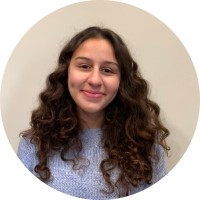

Our research is motivated by real-world problems in interdisciplinary studies such as social science, health informatics, and recommender systems. We endeavor to design transparent machine learning and data analytical techniques to better discover dynamic and interpretable patterns from large-scale data.
I am proud of each one of my students and mentees. I enjoy working with all of them!
If you are interested in joining our lab: Please check out openings and requirements.Current PhD students

|
Chang Lu, Computer Science Area of study: Graph Neural Networks for Healthcare 2019 - present |

|
Xiaoxue Han, Computer Science Area of study: Dynamic Graph Learning 2021 - present |
|
Jing Chen, Data Science (co-advise with Dr. German Creamer) Area of study: Multi-source Epidemic Forecasting 2021 - present |
|

|
Adam Sadej, Data Science (part-time) Area of study: Fairness and Explainability in AI 2022 - present |
Alumni

|
Songgaojun Deng, CS PhD at Stevens, 2018 - 2022 Dissertation: Modeling and Understanding Societal Events via Graph Neural Networks Recipient of the Excellence in Graduate Research Award (2022) |
|
Remington Kim, Bergen County Academies Summer intern 2021 Publication at Smoky Mountains Computational Sciences Data Challenge. |
|
|  |
Lyna Bacha, High Tech High School Summer intern 2021 Now: Duke University |

|
Weronika Zamlynny, CS undergraduate at Stevens Visited in 2019 Now: Microsoft |

|
Ameya Vaidya, Bridgewater-Raritan High School Summer intern 2019 Publication at ICWSM20. Now: Princeton University |

|
Kun Wu, CS Master at Stevens Visited in 2020 Now: PhD at Stevens |